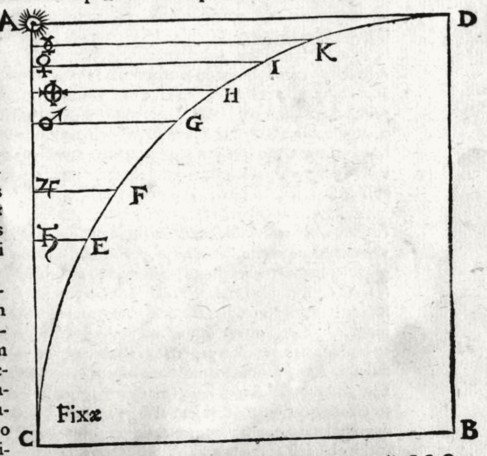
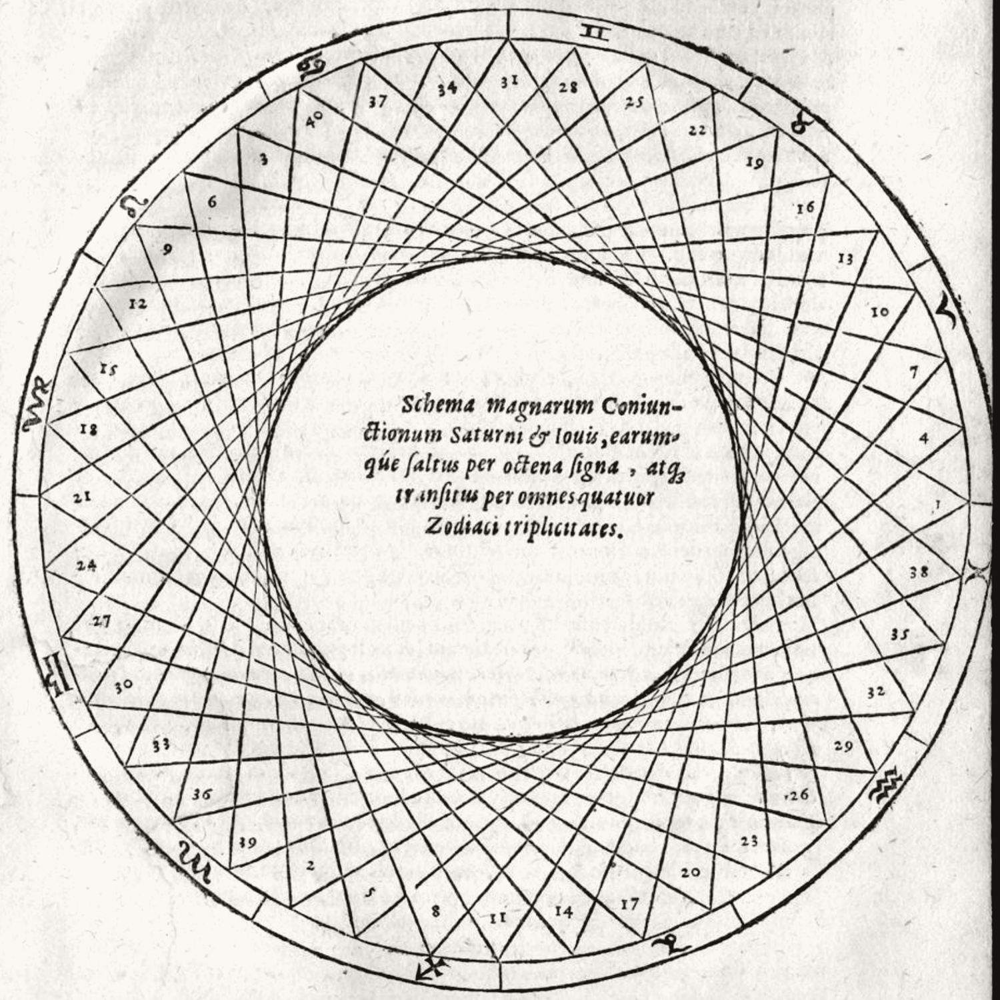

Praefatio ad Lectorem (De Inventione Graecensi, 19 Julii 1595)¶
Propositum est mihi, Lector, hoc opusculo demonstrare, quod Creator Optimus Maximus in mundi huius mobilis creatione et coelorum ordine disponendo ad illa quinque regularia corpora, quae a Pythagora et Platone in hunc usque diem tantam celebritatem sunt adepta, respexerit, atque ad illorum naturam coelorum numerum, proportiones et motuum rationem accommodaverit.
Cum ante annos sex Tubingae versarer clarissimo viro Magistro Michaeli Maestlino operam dans, sentiremque quam multa incommoda haberet usitata de mundo opinio: adeo sum delectatus Copernico, cuius ille in praelectionibus suis plurimam mentionem faciebat, ut non tantum eius sententiam in disputationibus candidatorum physicis saepius defenderim, sed etiam accuratam disputationem de motu primo, quod is telluris revolutione contingat, conscripserim. Iam tunc igitur coepi cogitare, quid causae esset, cur haec ita se haberent et non aliter: nempe cur sex orbes mobiles circa Solem immobilem existerent, non viginti aut centum, et quae ratio magnitudinis intervallorum inter Saturnum, Iovem, Martem, Terram, Venerem et Mercurium.


Tandem levi quadam occasione in ipsam rem propius irrupi. Die 9. (vel 19. stylo novo) Iulii anno 1595, cum demonstrarem in tabula auditoribus meis, quomodo coniunctiones magnae Saturni et Iovis per octonas zodiaci sedes salirent, de uno trigono in alium transeuntes, circulosque inscriptos et circumscriptos triangulo delinearem: ecce radius circuli inscripti OM dimidius videbatur radii circumscripti OA, ac paene qualis est proportio inter orbem Saturni (cSAT) et Iovis (cJUP)!


Statim igitur quadrangulum inter Martem et Iovem tentavi, pentagonum inter Martem et Terram, et sic porro. At nullus erat finis polygonorum planorum, cum tamen in coelo quinque dumtaxat essent intervalla inter sex planetas mobiles. “Quid,” inquam, “plana quaero inter solidos orbes? Solida potius corpora interponantur! Habes, Lector, inventum meum et huius totius opusculi materiam!” Nam in universa geometria solida, teste Euclide ([XIII.18]), quinque tantummodo dantur corpora regularia, nec plura in aeternum excogitari possunt.
Res admiratione digna, cum nondum constaret mihi de singulorum corporum praerogativis in ordine, usum me minime arguta coniectura ex notis Planetarum distantiis deducta, adeo feliciter scopum tetigisse in ordine
f. 0017 · p. 10corporum, ut nihil in illis postea, cum exquisitis agerem rationibus, immutare potuerim. Ad rei memoriam ascribo tibi sententiam, ita uti incidit, et eo momento verbis conceptam. Terra est Circulus mensor omnium: Illi circumscribe Dodecaedron: Circulus hoc comprehendens erit Mars. Marti circumscribe Tetraedron: Circulus hoc comprehendens erit Iupiter. Iovi circumscribe Cubum: Circulus hunc comprehendens erit Saturnus. Iam terrae inscribe Icosaedron: Illi inscriptus Circulus erit Venus. Veneri inscribe Octaedron: Illi inscriptus Circulus erit Mercurius. Habes rationem numeri planetarum.
Haec occasio et successus huius laboris: Vide nunc etiam meum in hoc libro propositum. Et quidem quantam ex inventione voluptatem perceperim, nunquam verbis expressero. Non me perditi temporis poenitebat amplius, non pertaesum est laboris, molestias calculi nullas subterfugi, dies noctesque computando consumpsi: donec cernerem, utrum concepta verbis sententia cum Copernici orbibus consentiret, an vero ferrent mea gaudia venti. Quod si rem, uti esse putabam, deprehenderem, votum Deo Opt. Max. feci, me prima occasione hoc admirabile suae sapientiae specimen publicis typis inter homines enunciaturum: ut quamvis neque haec undiquaque absoluta sint, et forte restent nonnulla, quae ex his fluant principiis, quorum inventionem mihi reservare possem: tamen alii, qui valent ingenio, quam plurima, ad illustrationem Nominis divini, primo quoque tempore iuxta me proferrent, et laudem sapientissimo Creatori uno ore accinerent. Cum igitur paucis post diebus res succederet, atque ego deprehenderem, quam apte unum corpus, post aliud inter suos Planetas sederet, totumque negocium in formam praesentis opusculi redigerem: atque id Maestlino celebri Mathematico probaretur: intelligis, amice Lector, me voti reum, neque posse morem Satyrico gerere, qui nonum in annum iubet libros detinere.
Haec una causa est meae maturationis: cui ut omnem tibi scrupulum sinistre suspicandi eximam, addo lubens et alteram, et recito tibi, illud Architae ex Cicerone: Si coelum ipsum ascendissem, Naturamque mundi, et pulchritudinem siderum penitus perspexissem, insuavis illa mihi foret admiratio, nisi te Lectorem aequum, attentum et cupidum, cui narrarem, haberem. Haec ubi cognoveris, si aequus es, abstinebis a reprehensionibus, quas non sine causa praesagio: Sin autem suo quidem loco relinquis ista: metuis tamen, ut certa sint, atque ut ego triumphum cecinerim ante victoriam: ergo vel tandem pagellas ipsas accede, et rem, qua de pridem agimus, cognosce. Non reperies novos et incognitos Planetas, ut paulo antea, interpositos, non ea mihi probatur audacia; sed illos veteres parum admodum luxatos, interiectu vero rectilineorum corporum, quantumvis absurdo, ita munitos, ut porro, quibus uncis coelum quo minus ruat, suspendatur, quaerenti rustico respondere possis. Vale.